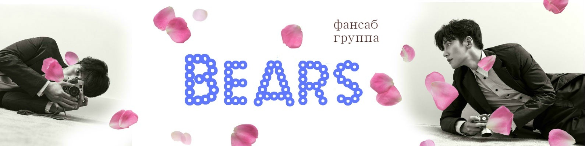

Фансаб - группа Bears не берут много проектов,
но если и берут один то хороший
и качественно переводят.
Возможно даже раньше других.
Дата основания и основная информация
Началом пути данной группы считается 2 января 2012 года.
За 8 лет Bears завершила 344 проекта.

Ссылки на аккаунты Bears
- В контакте.
- Группа.
- Одноклассники.